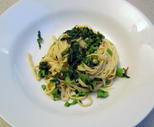

Spaghetti alla chitarra con cime di rapa
5,5 von 6Ca. 600 Gramm Cime di Rapa in mundgerechte Stücke schneiden und in Olivenöl mit Knoblauch und Peperoncini ca. 10 Min dünsten bis das Gemüse gar ist. Mit etwas Portwein ablöschen. Die al dente gekochten Pasta mit dem Gemüse vermengen und mit Salz, Pfeffer und Olivenöl abschmecken.
